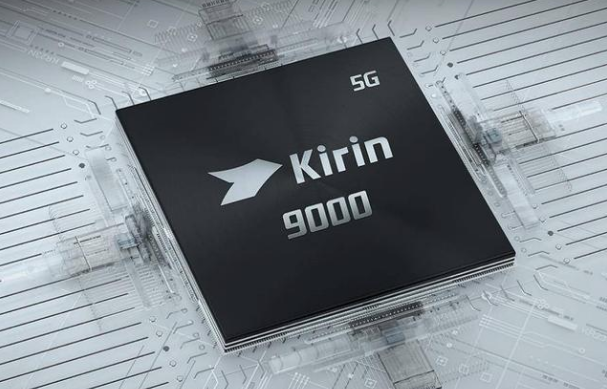
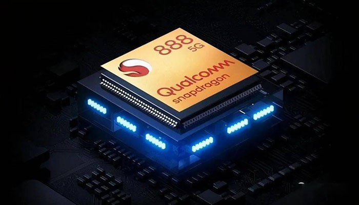
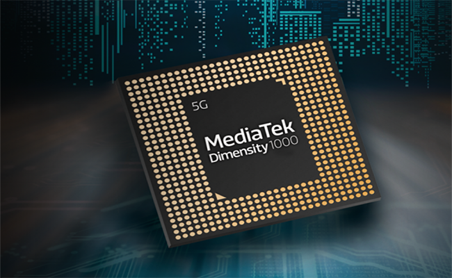
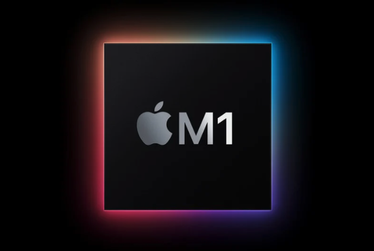
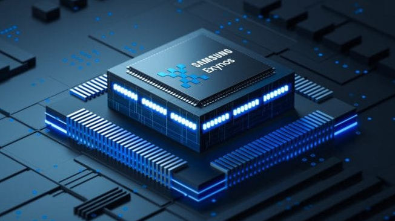

芯片是手机的灵魂

麒麟芯片
华为麒麟芯片（HUAWEI Kirin）是华为公司于2019年9月6日在德国柏林和北京同时发布的一款新一代旗舰芯片
华为麒麟在3G芯片大战中，扮演了“黑马”的角色。华为麒麟芯片的历史已经不短了，2004年成立主要是做一些行业专用芯片，
主要配套网络和视频应用，并没有进入智能手机市场。
在2009年，华为推出了一款以K3处理器试水智能手机，这也是国内第一款智能手机处理器
产品发布
2019年9月6日，华为在德国柏林和北京同时发布最新一代旗舰芯片麒麟990系列，包括麒麟990和麒麟990 5G两款芯片。
黑马蜕变
麒麟芯片真正的为人所知是华为发布的第一款四核手机华为D1，它采用海思K3V2一举跻身顶级智能手机处理器行列，
让业界惊叹。K3V2当时号称是全球最小的四核A9架构处理器，性能上与当时主流的处理器如三星猎户座Exynos4412相当，
这款芯片存在一些发热和GPU兼容问题，仍不失为是一款成功的芯片，代表着华为在手机芯片市场技术突破
业内领先
到了4G时代，华为发布了旗下首款八核处理器Kirin920，不仅参数非常强悍，实现了异构8核big.LITTLE架构，整体性能已与同期的高通骁龙805不相上下，并且其直接整合了BalongV7R2基带芯片，
可支持LTECat.6，是全球首款支持该技术的手机芯片，领先手机芯片霸主高通一个月发布，
而联发科支持LTECat.6技术要到2015年下半年，展讯则表示要到2016年。
一份来自中国移动内部的宣传材料显示，华为麒麟芯片最新Kirin950芯片将采用台积电16nmFinFET工艺，
集成的基带芯片将支持LTECat.10规范，成为后4G时代支持网速最快的手机芯片，作为对比，骁龙810暂时仅支持LTECat.9，
要到下一代骁龙820才能支持LTECat.10，再次实现了对高通的领先
洗牌大战
4G手机市场进入爆棚期，根据工信部电信研究院近日发布的《2015年6月国内手机市场运行分析报告》显示，2015年1月至6月，国内手机市场出货量达2.37亿部，上市新机型达778款，其中4G手机出货量达1.95亿部，上市新机型达552款，同比分别增长381.8%和58.6%。
在整个手机市场都在向4G迈进的过程中，智能手机价格偏低的事实却成为阻碍厂商利润增长的主要因素，因此到后4G时代，众多终端手机厂商尤其是走高端路线的厂商大举发力自家芯片的研发使用，在4G大趋势面前积极把握主动权。
以三星为例，2015年三星旗舰产品GalaxyS6弃用高通芯片，采用了三星自家的Exynos芯片，积极应对市场份额下降提升利润率的压力，如无意外的话，未来Note5也将全面采用Exynos芯片。
作为近两年在高端市场发展迅猛的手机厂商华为，从2014年的高端旗舰Mate7到2015年的全新旗舰P8均采用了华为自主研发华为麒麟芯片，而华为Mate7和华为P8在市场上的不俗表现，也证明了这颗中国“芯”的成功。
华为Fellow艾伟此前在一次媒体沟通会上曾表示：“华为坚信芯片是ICT行业皇冠上的明珠，我们从一开始就选择了最艰难的一条路去攀登，通过持续投入核心终端芯片的研发，掌握核心技术，构建长期的、持久的竞争力，从而为用户提供最佳的使用体验。”
而近日，更有中国移动公布的《中国移动终端质量报告》爆出，华为麒麟芯片在芯片评测环节以五项测试四项第一的成绩夺位高通，未来华为芯片的发展更是不可小觑。
从发展趋势看，未来4G芯片其应该具备强大数据和多媒体能力，与此同时，市场竞争的日趋激烈将进一步加速行业的洗牌。
得芯者得天下
在手机芯片行业，尤其是高性能芯片领域，依旧处于高通、联发科、海思、三星以及苹果五家争霸的局面，但同时具有手机终端制造能力和芯片研发能力的只有海思和三星，而高通和联发科则只提供解决方案，没有终端；比较特殊的是苹果，其芯片自主设计但委托生产，同时完全自用。其中三星的Exynos芯片除用于自家高端手机外，只有魅族采用；而多年来，海思处理器一般都应用在华为的明星机型上面。
华为芯片虽然没有对其它手机厂商开放，但已切入电视市场。2014年10月，海思的一款芯片被酷开选用在其新推出的电视新品中。可见，华为正在打造一种新的生态，这种生态系统主要是围绕手机进行，通过麒麟芯片延伸到平板、手腕上的手环、电视等，并获得同样质量的用户体验。
有业内人士指出，产业发展到高级阶段，竞争的核心不再是掌控技术本身，而是能否控制产业生态，而后4G时代，得“芯”者得天下。

高通骁龙芯片
概述
骁龙（Snapdragon）是高通公司（Qualcomm）推出的高度集成的“全合一”移动处理器系列平台，覆盖入门级智能手机乃至高端智能手机、平板电脑以及下一代智能终端。2012年2月20日，高通正式将Snapdragon系列处理器的中文名称定为“骁龙”。2017年，高通宣布将“骁龙处理器”更名为“骁龙移动平台”， [69] 使其更符合兼具“硬件、软件和服务”等多种技术的集大成者的形象，涵盖到高通的应用处理器、射频前端、快速充电、Wi-Fi、音频、指纹识别等各领域的先进技术。高通的骁龙移动平台是业界领先的全合一、全系列智能移动平台，具有高性能、低功耗、
智能化以及全面的连接性能，可为移动终端带来先进的人工智能（AI）、拍摄、游戏以及沉浸式影像和音频体验。
骁龙865平台
2019年12月，高通在骁龙年度技术峰会上推出高通骁龙865移动平台，为下一代旗舰终端提供最佳5G移动体验。
- 连接方面，其结合的骁龙X55 5G调制解调器及射频系统是全球首款商用的调制解调器到天线的完整5G解决方案，旨在带来一致的、超高速率的连接——可支持高达7.5 Gbps的峰值速率。该5G全球解决方案支持所有关键地区和主要频段，包括毫米波以及6 GHz 以下TDD和FDD频段。此外，它还支持非独立（NSA）和独立组网（SA）模式、动态频谱共享（DSS）、全球5G漫游，并支持多SIM卡。
- 在Wi-Fi 6性能和蓝牙音频体验方面，骁龙865通过骁龙FastConnect 6800移动连接子系统对其进行了重新定义。除了对aptX Adaptive和骁龙 TrueWireless Stereo Plus的支持，骁龙865新引入的骁龙aptX Voice让其成为首款以无线方式支持蓝牙超宽带语音（SWB- Super Wide Band）的移动平台，不仅可以带来全新水平的清晰音质，还能为无线耳机和耳塞提供更低时延、更长电池续航和更高链路稳定性。
- 处理性能方面，骁龙865强大的CPU和GPU为下一代旗舰终端提供了出色的处理能力，其中新一代骁龙Kryo 585 CPU的性能提升高达25%，全新骁龙Adreno 650 GPU的整体性能较前代平台提升25%。
- AI性能方面，骁龙865采用第五代高通人工智能引擎AI Engine和全新高通传感器中枢，能够带来比以往平台更智能、更个性化的体验。第五代人工智能引擎AI Engine可实现高达每秒15万亿次运算（15 TOPS），AI性能是前代平台的2倍。
- 拍摄方面，得益于高通Spectra 480 ISP处理速度高达惊人的每秒20亿像素，为移动终端的照片和视频拍摄提供了全新特性，用户可以拍摄拥有10亿色的4K HDR视频，也可以拍摄8K视频，亦或捕捉高达2亿像素的照片。
- 游戏方面，全新高通Snapdragon Elite Gaming支持一系列面向端游级别体验和极致逼真图形性能而设计的新特性，让玩家可以在骁龙终端上展开最高水平的游戏竞技。在骁龙865的支持下，用户能够以前所未有的方式尽情游戏、拍摄、进行多任务处理及实现无线连接。 [71]
自骁龙865移动平台在2019年12月发布之后，截至2020年2月，已有超过70款采用骁龙865的5G终端设计已发布或正在开发中；搭载骁龙8系移动平台已发布或正在开发中的终端设计已经超过1750款。 [72] 截至2020年2月，已宣布的以及即将发布的搭载骁龙865移动平台的智能手机包括：黑鲨游戏手机3、FCNT arrows 5G、iQOO 3、拯救者电竞手机、努比亚红魔5G、OPPO Find X2、Realme真我X50 Pro 5G、Redmi K30 Pro、华硕ROG游戏手机3、
三星Galaxy S20、S20+和S20 Ultra、夏普AQUOS R5G、索尼Xperia 1 II、vivo APEX 2020 概念机、小米
765平台
2019年12月，高通在骁龙年度技术峰会上宣布在骁龙7系移动平台支持5G，并推出骁龙765/765G移动平台，推动5G在2020年成为主流。 [74]
- 端到端5G连接：骁龙765集成骁龙X52 5G调制解调器及射频系统，峰值下载速率高达3.7 Gbps，上传速率达到1.6 Gbps，实现了面向全球用户的网络覆盖，还拥有全天电池续航。骁龙765专为在全球范围内广泛支持5G多模连接而设计，其可支持所有关键地区和主要频段，包括5G毫米波和6 GHz以下频段、5G独立（SA）和非独立（NSA）组网模式、TDD和FDD以及动态频谱共享（DSS）、全球5G漫游，并支持多SIM卡。
- 第五代AI Engine：骁龙765搭载了全新第五代人工智能引擎AI Engine，拍摄、音频、语音和游戏等移动体验均实现提升。骁龙765搭载的人工智能引擎AI Engine中的全新高通Hexagon 张量加速器的处理速度较前代产品提升至2倍。此外，全新低功耗Sensing Hub让终端能够情境感知语音指令，且不消耗更多电量。
- 多摄像头智能拍摄：骁龙765的多摄像头智能拍摄为用户提供了长焦、广角和超广角镜头，用户无需任何附加设备即可创作出精美照片。同时，骁龙765还可拍摄超过10亿色的4K HDR视频。
- 娱乐体验：骁龙765支持极速下载和无缝流传输4K HDR视频，在离线状态下，终端侧AI处理也能将标准品质的视频转化为用户在4K视频上能感受到的生动、震撼的视觉效果。
此外，高通aptX Adaptive音频可在高清模式和低时延模式之间自动切换，有效减少了声画不同步问题。
- 性能增强：全新高通Kryo 475主频高达2.3GHz，同时先进的高通Adreno 620 GPU实现了高达20%的性能提升，可以支持流畅游戏、视频渲染等特性。高通Quick Charge AI能够将电池充电寿命比原来增加多达200天，并且其支持终端以峰值速度充电，让用户能够快速回到喜爱的数字娱乐内容中。
- 骁龙765G：骁龙765G不仅拥有强大的5G和AI特性，还支持部分高通骁龙Elite Gaming特性，从而实现极致的游戏性能。骁龙765G基于骁龙765而打造，其AI性能高达每秒5.5万亿次运算（5.5 TOPS），在增强的Adreno GPU的支持下图形渲染速度提升达10%，面向特定游戏的扩展和优化、更流畅的游戏体验，支持真正的10-bit HDR。 [75]
在2019年12月发布后不到半年时间内，已经有Redmi K30 5G、OPPO Reno3 Pro、realme 真我 X50、vivo Z6、中兴天机Axon 11等搭载了骁龙765G移动平台的手机大规模集中上市 [76] ，为消费者带来更多价格更亲民的终端选择，也大大提升了5G终端的市场热度。

联发科芯片平台
历史
台湾联发科技于2010年7月12日正式加入由谷歌为推广Android操作系统而发起的“开放手机联盟”，并将打造联发科“专属的Android智能型手机解决方案”。分析认为，联发科的加盟，有望让Android系统智能手机成本降低2/3。 [2-3]
2011年底，联发科发布Android智能手机平台MT6573，正式进军智能手机市场。
2012年2月，联发科技发布最新Android智能手机平台MT6575。
2012年6月，联发科发布最新双核智能手机解决方案 MT6577。
2012年6月，联发科技宣布公开收购开曼晨星股权。
2012年12月，联发科技发布全球首款四核智能机系统单芯片MT6589，以绝佳的系统优化达到性能与功耗的平衡，
大幅提升用户体验。
2013年4月，联发科技北京子公司全新办公大楼落成启用，落户高 .新技术企业云集的朝阳区电子城国际电子总部。
2013年5月，联发科技发布世界首款采用28纳米制程的入门级双核MT6572，SoC高度整合WiFi、FM、GPS以及蓝牙功能，
全新定义入门级手机的标准，持续领跑全球智能手机普及化风潮。
2013年6月，联发科技发布的MT6589T大量上市，应用于红米手机和大可乐2S等国内知名中高端智能手机。 [4]
2013年7月，联发科技发布改进型四核MT6582，首度将TD-SCDMA及WCDMA双模整合在同一单芯片中；与MT6589相比，MT6582在提升综合性能的同时大大降低了生产成本。 [5]
2013年11月21日，联发科技发布全球首款八核芯片MT6592，华为、酷派、TCL、北斗青葱等国内知名手机厂商已明确采用。
同时浮出水面的还有联发科最强四核MT6588。联发科似乎已开始切入以往被高通占领的中高端手机芯片市场。 [6]
2014年2月11日，联发科正式发布了全球首款支持4G LTE网络的真八核处理器MT6595，该芯片采用四核Cortex-A17以及四核Cortex-A7的大小核方案。 [7]
2014年2月24日，联发科通过官方微博宣布，即日启用全新品牌标识。由之前的“MEDIATEK”橙、蓝两种配色变成了白色，而且增加了一个平行四边形的橙色背景。 [8]
2014年2月24日，联发科发布了旗下64位LTE单芯片四核解决方案MT6732，该芯片基于ARM Cortex- A53架构，
主频为1.5GHz，这是继苹果A7、高通骁龙410后的第三款64位移动处理器。 [9]
2014年2月25日，联发科又发布了更强悍的MT6752，同样基于64位ARM Cortex- A53架构，而且是实打实的八核处理器，主频达到2GHz，商用时间在第三季度。 [10]
2014年3月，联发科发布了全球首款六核芯片MT6591，定位介于MT6588、MT6592之间。 [11]
2014年7月15日，联发科在深圳君悦酒店正式发布了全球首款采用A17核心的8核4G单芯片解决方案(SoC)MT6595，
MT6595的安兔兔跑分成绩高达47000分以上，是迄今为止得分最高的智能手机处理器之一。 [12]
2015年2月6日，联发科正式发布首款支持CDMA制式SoC--MT6753、MT6735.，有望大力推进电信手机的发展。 [13]
2015年4月01日，MTK发布64位八核处理器Helio X和Helio P。 [14]
2015年7月10日，MTK X10智能8核心芯片被用在小米红米，魅族，乐视等款手机进军高端市场。 [15]
2016年3月16日，联发科曦力X20量产发布 三丛十核芯，全球首款10核心芯片。 [16]
2016年3月16日，联发科发布了它的升级版Helio X25。联发科表示A72架构的主频从2.3GHz提升到了2.5GHz，GPU频率则从780MHz升级到了850MHz，性能自然会更强一些。 [17]
2016年9月27日，联发科发布全球首枚10纳米芯片Helio X30。 [18]
2018年3月7日，联发科技宣布将会联手腾讯共同成立创新实验室，围绕手机游戏及其他互娱产品的开发与优化达成战略合作，
共同探索AI在终端侧的应用。 [1]
2018年7月，联发科公布了6月营收业绩，单月营收达到210.6亿元新台币，创2018年单月营收新高。累计前6个月营收1101.35亿元新台币，同比下滑3.53%。 [19]
2019年11月26日下午，联发科技在深圳“MediaTek 5G 岂止领先”发布会，正式发布了全球首款5G双载波聚合、5G双卡双待的5G SoC新品“天玑1000”。 [20]
联发科络达在2019年推出了类似苹果的MCsync方案,并且在7月份推出了芯片络达1536方案,每月更新,实现接近苹果的连接体验,促进了华强北白牌厂商大爆发。 [21]
2020年5月7日，联发科举办线上媒体技术沟通会发布天玑1000+。 [22]
2021年1月20日下午， 联发科举办天玑新品线上发布会，正式发布全新的天玑旗舰5G移动芯片——天玑1200与天玑1100。
通过在5G、AI、拍照、视频、游戏等全方面的出色技术，为快速增长的全球移动市场注入新动力。

苹果芯片发展史
时间回到iPhone4发布的那一年,苹果在那时就开始脱离了第三方处理器, 推出了自主研发的A4处理器,
这也是苹果首次在iPhone上用上A系列处理器, A4是一颗基于45纳米制程的
ARM Cortex－A8的处理器
GPU依旧为PowerVR SGX 535
A4相较于三星S5PC110去除了一些不必要的东西
并将L2 缓存由S5PC110的512KB扩大为640KB
所以在同等频率下其性能好于S5PC110
A4处理器也借此一跃成为了
当时性能最为强悍的“单核之王”
而随后iPhone 4s上的的双核A5处理器
也是在A4的基础上进行升级
包括使用32 纳米的Core ARM
GPU升级到200MHz的PowerVR SGX543 MP2
使其运算性能提升2倍
绘图性能较前一代A4提升7倍
同时还具备低功耗特性
此CPU被广泛使用在
iPad 2，iPhone 4S，第三代Apple TV
iPod touch 5，iPad mini上
是当时移动端理器里神话般的存在
时间来到2013年9月
这是手机移动处理器划时代的一年
对于整个移动处端理器产业来说也是一大步
因为苹果在那年发布了
全球首款64位的A7处理器
从此标志着移动处理器进入了64位时代
A7是一款划时代的CPU
在当时，高通，三星和联发科的处理器
还在沉浸于32位四核处理器的时候
双核64位A7的发布
可谓杀得众安卓措手不及
A7的CPU部分是苹果公司
自行研发64位元ARM v8双核心处理器,
架构没有完全遵照ARM Cortex－A57
可以说是基于A57魔改而来,
GPU则为当时全新6系PowerVR G6430
其图形处理性能达到了游戏主机级别,
即，PS3和Xbox 360

三星猎户座
Exynos是三星电子基于ARM构架设计研发的处理器品牌，于2011年2月面世。Exynos由两个希腊语单词组合而来：
Exypnos和Prasinos，分别代表“智能”与“环保”之意。Exynos系列处理器主要应用在智能手机和平板电脑等移动终端上。
三星在 CES 2013 上发表了全新的双四核 Exynos 5 Octa 芯片，但遗憾的是当时他们并没有给出太多的细节。不过好在 AnandTech 从「多个来源」处为我们打探来了一些消息，根据其报道来看这款新产品将仍旧采用现有的 PowerVR 544MP3 GPU，工作频率为 533MHz。
如果最终确实如此的话，那就代表说用于 Exynos Dual 中的 ARM Mali T-604 可能无法满足 Exynos 5 Octa 的需求，
而高规格的 T-658 则可能还没有准备就绪。若是从图形和 GPU 计算表现推测的话，Exynos 5 Octa 将可能会处于第三代 iPad（A5X）和第四代 iPad（A6X）之间。 [2]
三星向来有为自家设备研发处理器的历史，一些芯片也用在其它品牌的设备上，例如苹果前三代iPhone。在2011年2月，三星正式将自家处理器品牌命名为Exynos。经常看到Exynos和猎户座这两个名词被放在一起讲。实际上该系列芯片的开发代号为Orion，中文就是猎户座的意思。而Exynos是其正式代号，由两个希腊语单词组合而来：Exynos和Prasinos，分别代表“智能”与“环保”之意。 [3]
在Exynos命名之前，三星的处理器型号夹杂字母和数字，比较复杂难记。不过由于iPhone系列的成功，由三星制造的处理器也获得了广泛关注。S5L8900处理器首先应用于2007年发表的第一代iPhone上，其后也使用在iPhone 3G上，该处理器主频为412MHz，当时搭配的GPU是PowerVR MBX-Lite。比较有名的则是S5PC100处理器，
使用在2009年推出的iPhone 3GS和第三代iPod touch上，采用Cortex-A8架构，主频为667MHz，但是遇到大程序会自动超频至833MHz。